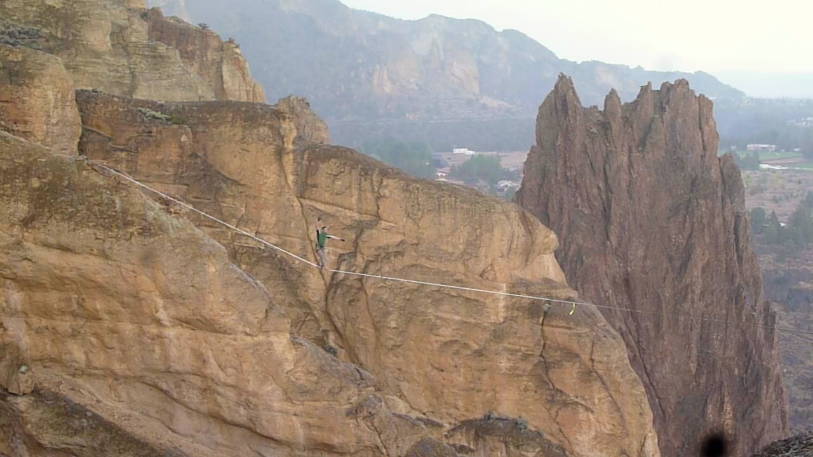
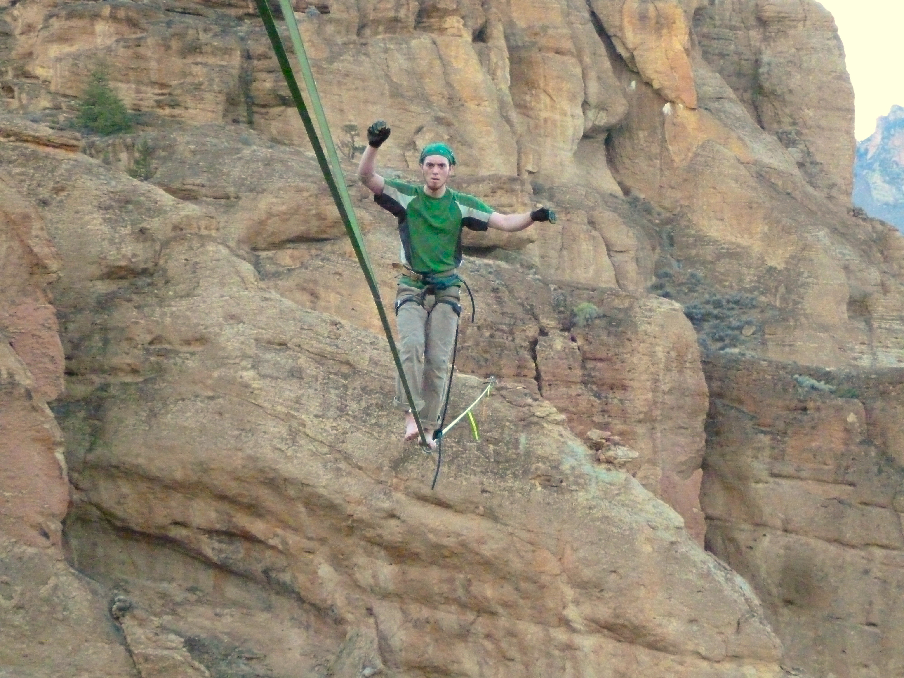
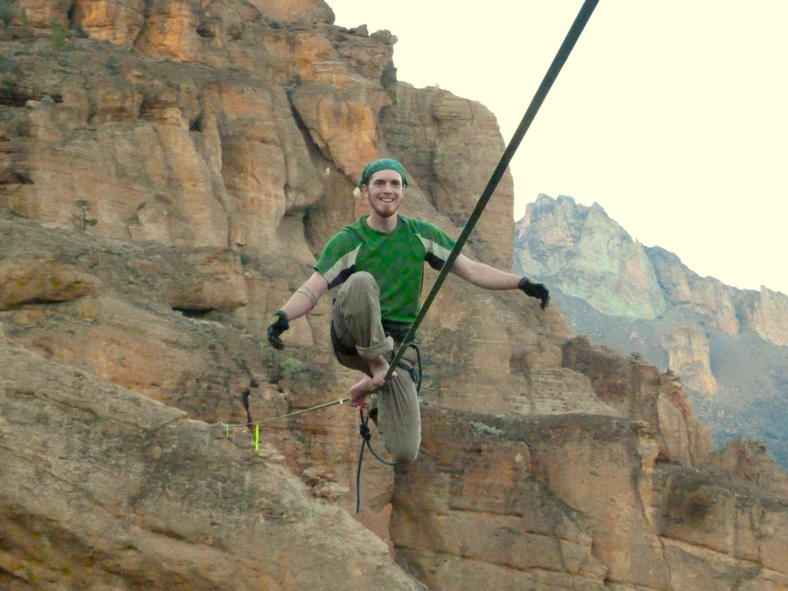
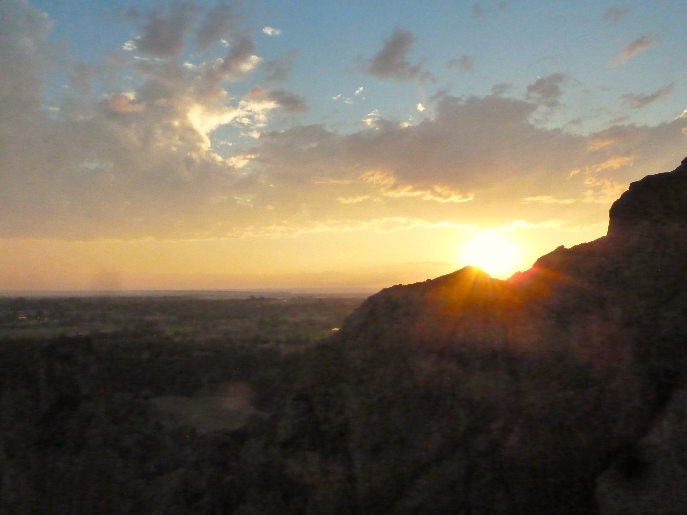

Blue Dream
A little weary from my first crossing, I stand on the line and face the return journey. I start to make my way across the 220 feet of increasingly wet double type-18, but I’m still too tense and in the wrong frame of mind, and I fall and catch after only a few steps. No send on this effort either. Then, the thunder that I thought had passed roars again, and the rain starts to fall in earnest. As the drama of the elements increases, my internal struggle with nerves and over analysis fades away...
Any highline walk is an intense and memorable experience, but there are a few moments from my highlining career that stand out above the rest. Sometimes these moments correspond to sending a big project line under sunny skies, but they can also occur without any clear successes, achievements, or pleasant conditions. I’m writing about one of these superlative experiences with ambiguous conditions because I want to understand and share how a moment like this happens, and try to learn how to achieve this kind of unconditional stoke more often in slacklining, and perhaps even elsewhere in life.
OK, so a little background about how I came to be in the middle of a huge highline in the midst of a thunderstorm.
I had been aiming to walk this line for close to a year. Blue Dream, 220’ long and about 200’ high, dominates the highline landscape in Smith Rock State Park, Oregon (except when its big brother, Overdose 390’ is rigged). I first saw the line at the Smith Rock highline festival in September 2012, when it was established by Chris Rigby and Jerry Miszewski. I had the chance to walk on it then, and although I managed to convince myself that the line felt doable for the several steps I could stay on it, in reality it was beyond my reach at that time. But seeing Chris and Jerry cruise and bounce that line helped to form my vision of the highlining I wanted to do.
By the next summer, I had put in miles of walking on long, loose type-18 lines, and I was starting to feel ready to give Blue Dream another shot. When my highline buddy Carl and I both had a weekend off in August, we decided to bomb down from Seattle to Smith Rock with the goal of rigging Blue Dream. Little did we know what difficulties we would face.
We hit the road just in time to catch the worst of rush hour through Seattle, Tacoma, and beyond. The first sign of trouble, which was recognized by neither of us at the time, was Carl’s observation that “the car is kinda drifting to the right”. The next sign of trouble came a few hours later, with Carl’s observation “man the car is really pulling to the right”. The next sign of trouble after that was only a few seconds later, when the front left tire blew out.
We were in the far left lane. I glanced to my right, and saw a tractor trailer approaching in the next lane over. It was a surreal “is this how it all ends” kind of moment. Like a champ, Carl kept control of the car, smoothly passed in front of the tractor trailer, and got us all the way across the road to come to a stop on the right shoulder.
We quickly progressed past thoughts of “thank god we are alive” to “are we totally stranded?” followed by “is there any way we can save this highline trip?” Besides the mega bonus of not getting us killed, Carl’s move to get us onto the right shoulder proved to be a key step in keeping the trip alive. If we had been against the guardrail on the left side of the road, we would have been pinned down by traffic, and certainly not able work on the car. We couldn’t find the tool for operating the jack, so we improvised with a chain of quicklinks from the highline rig and commenced a complicated process of tire changes. The spare replaced the fully destroyed front left tire, while the front right tire, which was only 95% destroyed, was swapped with the back left tire.
Tire changes completed, we started a nerve racking 45 MPH drive back in the direction we had come from. Thankfully, we made it far enough north to meet Carl’s father, who incredibly generously picked us up and drove us back to Seattle, leaving Carl’s car at a shop. We piled our gear into the back of his truck, and drove back to my house where we had started the drive 6 or 7 hours earlier. Then, we jammed our bags into my car, and hit the road again. Sometimes you just have to make it happen. By 3AM the next morning, we were pulling in to the Smith Rock bivy.
Luckily, our late arrival put us perfectly in tune with a bivy style alpine start around noon. We loosely coordinated with some of the locals, and headed across the river and up the trail to start the rig. A few hours later the line was up, and so was the sun. It is HOT in Smith Rock in August. I think I must have tried the line a few times when it cooled down in the afternoon, but without much success. It was ok, I was tired from the shenanigans on the way down, and there was always tomorrow.
Well, the next day came, and I still felt shaky. I waited through most of the day for it to cool down, but just as it was nearing ideal walking time, a storm rolled in, with thunder, lightning, and wind. It was not looking good for walking the line that day. We sat in a cave watching lightning and counting the time to the thunder. The storm came in fast, but hopefully that meant it would quickly pass. Soon, the thunder was less frequent, and always from the same direction, away in the direction the storm had gone. The sky was still grey, but I judged that the electrical danger had passed.
Alright, so this brings us up to the moment where I started this story. I made it across the line in one direction, falling several times. As I started to make my way back, the weather changed from a light drizzle to a thick, heavy rain, and the thunder suddenly returned. The clouds above us were solid and grey, but the sky on the horizon was nearly clear, and golden afternoon light angled under the storm clouds. The raindrops glowed, seeming to fill the space around me with a solid matrix of falling white dots. With each clap of thunder, I shouted back at the sky as loud as I could. Somehow in the chaos of the elements I lost track of the fact that I was struggling with the line. I started walking more smoothly, and then bouncing the line as I walked. There was so much going on around me that I felt compelled to join in. The weather was suddenly going all out, and that somehow made it easier for me to go all out, even though the conditions for walking were objectively worse. I bounced the line bigger and bigger until I lost control and had to catch. Bouncing a big type-18 line like that feels a little like flying.

It’s been nice thinking about and reliving that moment, but now that I’ve written it down I’m not sure I’m any closer to understanding why that particular walk has stuck in my mind for so long. The answer certainly isn’t as simple as just going slacklining in a storm. I do find it very intriguing that this moment I’ve described is the one that stuck, rather than a moment that happened a couple hours after the storm had passed. In the last light of the day, I got back on the line and without much fuss sent it both ways. Sending the line felt amazing, and was the culmination of almost a year of thought and preparation. But yet, the breakthrough moment was not the send, but the chaotic walk in the rain.

Somehow this puzzling situation gives me a good feeling. It can’t be every day that you send a long time project and set a new personal record, but luckily transcendent moments don’t require that kind of quantifiable achievement. I suspect that these moments are impossible to predict or create, but I strive to be ready to embrace them fully when they appear.


This post was originally published on the Balance Community Pro-team blog.